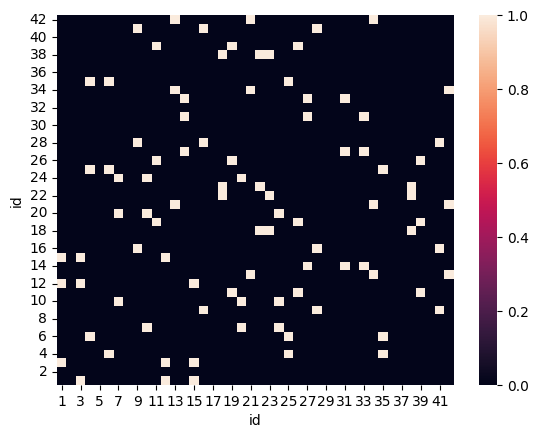
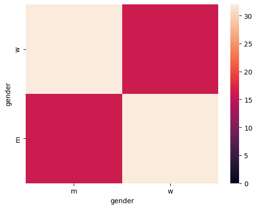

Inspecting the network: The Inspector class
When building network models, it is important to evaluate the created networks to ensure they are a valid representation of the target network. For this purpose, Popy provides a couple of tools.
Network measures
For a quick quanitative inspection of the network(s) produced, one can use utils.network_measures():
[ ]:
inspector.network_measures()
[{'diameter': 3,
'density': 1.0,
'transitivity': 1.0,
'avg_clustering': 0.07275933825277255,
'avg_path_length': 1.7047619047619047},
{'diameter': 3,
'density': 1.0,
'transitivity': 1.0,
'avg_clustering': 0.08229811172257519,
'avg_path_length': 1.6857142857142857}]
If the network is divided into independent clusters, this function returns the measures for each cluster.
Affiliation statistics
To get a quick overview of the number of affiliations per agents or location, use inspector.eval_affiliations(). The first table shows how many agents are assigned to an instance of a location. The second table shows the number of locations an agent is assigned to.
[ ]:
inspector.eval_affiliations()
______________________________________
Number of agents per location
______________________________________
mean std min 25% 50% 75% max
location_class
ClassRoom 5.0 0.00000 5.0 5.0 5.0 5.0 5.0
School 21.0 0.00000 21.0 21.0 21.0 21.0 21.0
SoccerTeam 10.5 0.57735 10.0 10.0 10.5 11.0 11.0
______________________________________
Number of affiliated locations per agent
______________________________________
mean 2.952381
std 0.215540
min 2.000000
25% 3.000000
50% 3.000000
75% 3.000000
max 3.000000
Name: n_affiliated_locations, dtype: float64
Contact matrix
utils.create_contact_matrix() shows the contact intensity between agents using a contact matrix. With no further input than the list of agents, the matrix shows the contact intensities for each pair of agents.
[ ]:
import popy.utils as utils
utils.create_contact_matrix(agents=agents)

To aggregate the results, simply insert the name of an agent attribute for attr. For instance, the following matrix shows the number of contacts between the different gender groups.
[ ]:
utils.create_contact_matrix(agents=agents, attr="gender")

By setting return_df to True, the data of the matrix can be returned, too.
[ ]:
utils.create_contact_matrix(agents=agents, attr="gender", return_df=True)
| m | w | |
|---|---|---|
| w | 32 | 16 |
| m | 16 | 32 |